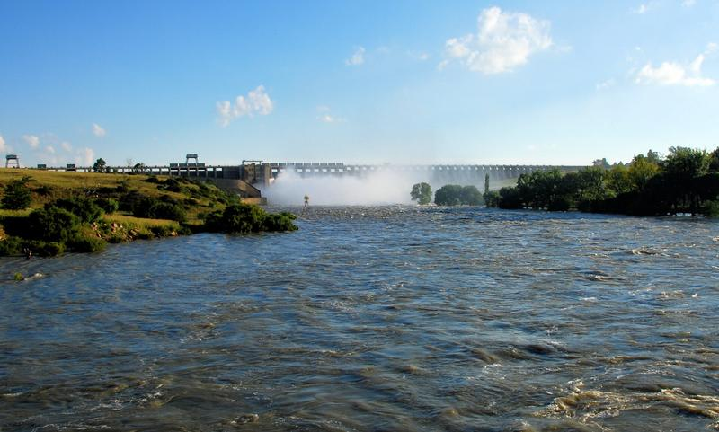

A thirsty Reef and a wide river
Johannesburg grew up on gold, not water. There is no great river running through the Witwatersrand, and as the mines, factories and suburbs spread in the early twentieth century, the Reef needed far more water than its springs and small dams could give. Rand Water had already built the Vaal River Barrage near Vereeniging in the early 1920s, but it was soon clear that something much bigger was needed upstream.
The answer was a great storage dam on the Vaal River, just below the point where the Wilge River flows in from the Free State.
Built in the Great Depression
Work on the dam got under way in the early 1930s, at the depth of the Great Depression. Most accounts give 1934 as the start of construction, with some preparatory work reported from late 1933. Like many public works of the time, it was partly a relief scheme: it put unemployed men to work, and about 800 men worked on the wall.
The scheme was a joint venture between Rand Water and the government’s Department of Irrigation (today the Department of Water and Sanitation). They built a concrete gravity wall with an earth embankment on one flank, and it was completed in 1938. The new lake held about 994 million cubic metres, and behind it the old river valley, with its farms, drifts and homesteads, disappeared beneath the water.


Raising the wall, twice
- 1938Original wall completed, 54.2 m above its lowest foundation, holding about 994 million m³.
- Early 1950sThe wall is raised to about 60.3 m, more than doubling storage to roughly 2.19 billion m³, as industry and the Free State goldfields grow.
- 1985A second raising adds another 3.05 m, to 63.4 m above lowest foundation, mainly to hold back floods.
- TodayFull supply capacity is about 2.6 billion m³, with roughly a further quarter of that able to be held temporarily to soak up a flood.
The dam today
At full supply the Vaal Dam covers roughly 320 square kilometres and has more than 800 kilometres of shoreline, shared between Gauteng, the Free State and Mpumalanga. It is one of South Africa’s largest dams by area and a cornerstone of the water supply to Gauteng’s homes and industries, while also helping to control floods downstream.
It is no longer fed only by its own rivers. Water from the Lesotho Highlands Water Project flows down the Liebenbergsvlei and Wilge rivers into the dam, and the Sterkfontein Dam in the Drakensberg can release water into the system when the Vaal runs low.
In wet years the sluice gates roar open and crowds gather on the bridges. In dry years the water pulls back and the old valley floor, with its walls, foundations and graves, slowly reappears.
The big island
Out in the middle of the dam lies its largest island, several kilometres long. Local lore, repeated by Gauteng Tourism, says the island was once used by the apartheid government as a discreet place for secret meetings. We have not found documentary records that confirm the story, so treat it as one of the dam’s legends.
What is certain is the island’s place in sailing history. Every year, on the first weekend of February, Lake Deneys Yacht Club hosts the Round the Island Race. Its 2007 edition set the Guinness World Record for the most yachts to finish an inland yacht race: 389 boats. Read more about the island owned by a university on our UJ Island page.
The flood of 1996
In February 1996 the largest flood ever recorded at the dam arrived when it was already full. More than 4,700 cubic metres of water a second poured in. Hydrologists managed to hold the release to about 2,300 cubic metres a second to protect the towns downstream, and on 19 February 1996 the dam peaked at 118.5% of its full supply capacity. People who were here still measure every other summer against it.
And then there were flying boats
For a few remarkable years, the dam was also an international airport with no runway. Read the flying-boat story.
Sources
- Department of Water and Sanitation, Vaal Dam data (via Wikipedia, “Vaal Dam”, and its cited DWA reference)
- Water history notes on the Vaal Dam (waterinfo.co.za) and the Water Research Commission’s The Water Wheel, July/August 2008
- Department of Water and Sanitation, Vaal Dam Resource Management Plan
- Lake Deneys Yacht Club, “About us”, and the Guinness World Records entry for most yachts to finish an inland race (4 February 2007)
- Gauteng Tourism Authority, “Vaal Dam” (as cited by Wikipedia) for the island legend
Spotted an error or have an old photo of the dam? Tell us; we would love to make this page even better.